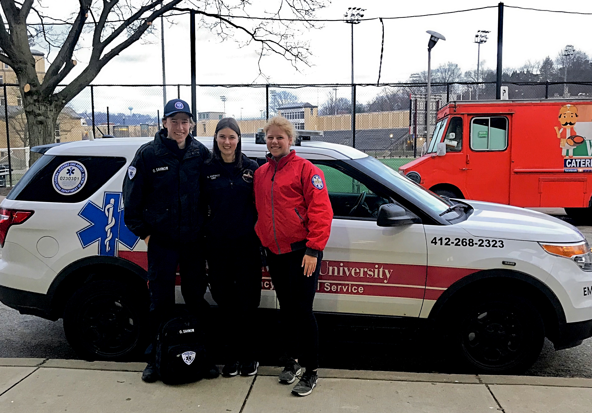
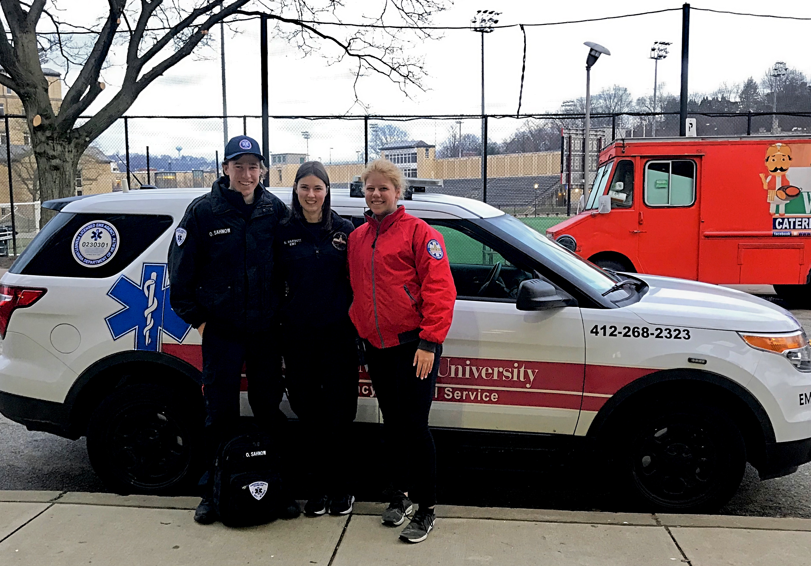

Kellen Gibson

My name is Kellen Gibson and I'm a sophomore Computer Science and Computational Biology student at Carnegie Mellon University. My passion is integrating Computer Science into Biology to improve health care technology. I'm currently studying Computational Biology theory and an introductory Computer Systems course. On this site you can find more information about me, what I do, and get in touch with me.
Welcome :)
An overview of my activities
 
